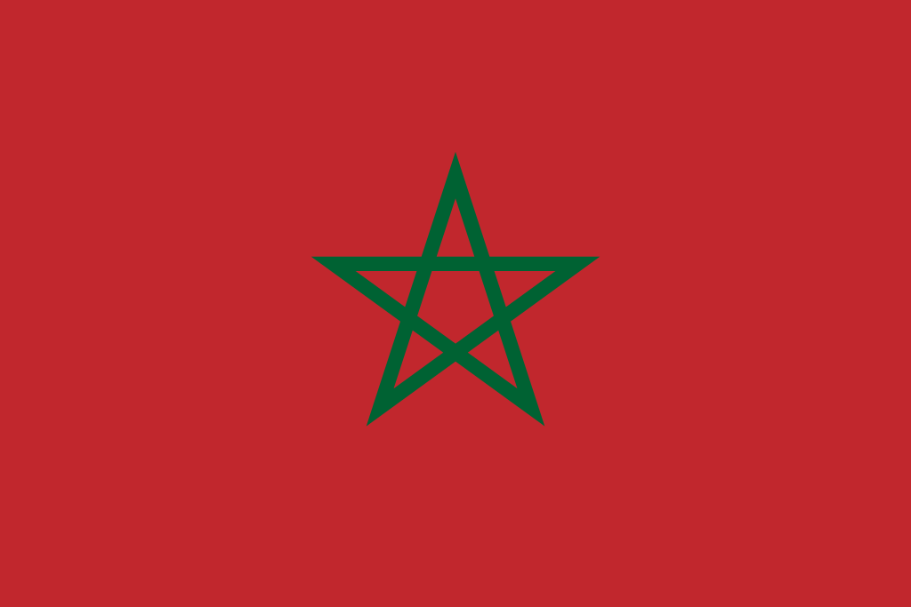

Moroccan culture is a mix of Arab, Berber, Jewish, and Western European traditions. It both symbolizes and reflects the integration of historical influences. The disciplines of individual or social conduct, language, conventions, knowledge, beliefs, the arts, law, cuisine, entertainment, literature, engineering, etc. may all fall under this category. While Morocco began to steadily shift toward Sunni Islam in the ninth and tenth centuries AD, during the reign of the Almoravids, a sizeable old Jewish population played an important role in influencing Moroccan culture. A rural Donatist Christianity and a still-developing Roman Catholicism were both existent in ancient times, from the second century A.D. through the seventh. The multi-millennial aboriginal Berber substratum continues to serve as the foundation for all of the cultural super layers.

Whether sampling cuisine at a local souq or relaxing in the sun at a white-washed seaside town, the past is always present in this colorful country. Here’s a look at the best places to visit in Morocco:.
Click on the each places to read more about them: